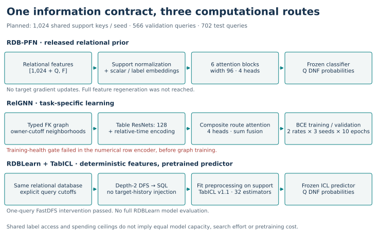
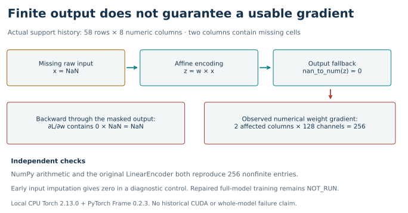
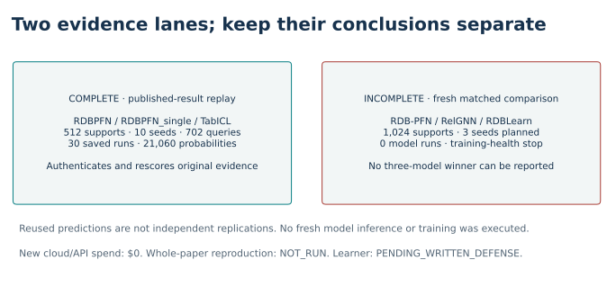

Year 5 · Quarter 2 · Lesson 178
FM vs tuned GNN vs RDBLearn
Your win: decide whether three model scores are comparable before choosing a winner. Allow 15 minutes here, then complete the notebook's three live audit functions.
Lesson 176 showed that more context can change accuracy. Lesson 177 counted the work needed to obtain that evidence. We now combine those questions: did the methods solve the same prediction problem with the same information and a defensible budget? That is the comparison your research mission needs.
Prerequisites: full (entity, cutoff) query keys; training versus validation versus test; frozen weights versus label access; reservations versus measured costs. Recall RelGNN's composite routes and RDB-PFN's relational prior. The links in the notebook include the exact source implementations.
1 · Three routes; one prediction contract¶
A relational foundation model can reuse pretrained weights while conditioning on support examples. A supervised GNN learns task-specific parameters from labeled queries and relational neighborhoods. RDBLearn builds relational features and delegates prediction to an existing tabular model. RDBLearn also uses a foundation model: these are pipeline choices, not three mutually exclusive kinds of intelligence. RDBLearn §3, RelGNN §4, RDB-PFN v5.


Our frozen course comparison planned RDB-PFN, freshly trained RelGNN and actual RDBLearn+TabICL on the same 1,024 training keys for each of three seeds. All 566 validation and 702 test queries remain. RelGNN gets two learning rates and ten complete epochs per fit; its configuration is selected by validation, never test. Each arm has the same $1.50 spending ceiling; shared preparation and validation also count toward the $10 aggregate cap. Equal ceilings do not imply equal search or equal pretraining investment.
2 · A shared task name is not enough¶
For driver-dnf, reconstruct the target from raw races: did any result in (cutoff, cutoff + 30 days] have statusId != 1? Check the entire (driverId, cutoff) population. A different cutoff for the same driver is another prediction.
Here the released RDB-PFN labels are one minus this raw DNF indicator for every one of the 12,679 train/validation/test rows. For saved predictions, DNF probability is therefore 1 − released_probability. Complement both labels and scores; the AUROC is preserved. Use float64 subtraction when auditing saved float32 scores to avoid introducing new ties.
Worked example: a released label of 0 and probability 0.2 become DNF label 1 and probability 0.8. Changing only the column heading would call a 20% finishing probability a 20% DNF probability.
Do not infer the label window from a conservative support-availability bound. A 60-day window changes 82 of the 702 test labels. The original 30-day source definition and raw audit are linked in the protocol. The cohort also requires future participation; this is not an all-driver prospective forecast.
Equal support counts are another trap. In the pinned RDBLearn implementation, optional target-history augmentation stores the full X, y before downsampling. Passing 11,411 labels and setting a support cap of 1,024 could therefore expose more labels through relational features. Our proposed matched arm disables augmentation and passes only the approved support. This concerns explicit task-label access; shared historical database facts remain available. Pinned estimator.
3 · A valid comparison needs a model that can train¶
Recall the two passes. The forward pass computes a prediction. The backward pass computes gradients: derivatives that tell the optimizer how changing a weight changes the loss. A finite number is neither infinity nor NaN (“not a number”). A finite prediction can coexist with a NaN gradient, so prediction checks alone cannot certify that training works.
Observed: published-result replay COMPLETE; fresh three-model comparison INCOMPLETE_TRAINING_HEALTH_GATE. The local encoder probe has 256 nonfinite gradient entries. No fresh benchmark model fits or inference and $0 cloud/API spend. Whole-paper reproduction and repaired-model training: NOT_RUN.
The actual FastDFS preflight produced 65 columns for one real support query. Changing numeric non-key cells at or after its cutoff left those outputs unchanged. This diagnostic passes; it does not prove every feature for every query is temporally valid.
The next check failed. The released RelGNN row encoder received 58 earlier results for driver 34 at the 1999-08-01 cutoff. Among eight numeric columns, milliseconds has 30 missing values and position has 21. Its output is finite, but 256 numerical weight-gradient entries are nonfinite.


A scalar trace explains why. Let a missing value be x = NaN and compute z = w × x. Replacing the resulting z with zero makes the forward output finite. In the backward calculation, the masked branch contributes 0 × NaN to the weight gradient, which is still NaN. The source applies its fallback after the affine operation. The independent check reproduces the failure using both arithmetic and the original numerical encoder.
Imputing before that operation gives finite gradients in a diagnostic control. It does not prove that a repaired full GNN trains well or preserves the published behavior. We keep the approved stop: no six-fit tuning grid, no fresh ICL model evaluations, no invented winner. The local probe uses CPU Torch 2.13.0 and pinned PyTorch Frame 0.2.3; the historical CUDA runtime was not run. Original encoder, actual probe, independent check.
4 · What the completed replay establishes¶
| Saved published arm | Replayed mean AUROC | Sample SD, 10 supports | Paper reference |
|---|---|---|---|
| RDBPFN | 0.721938 | 0.019983 | 0.7219 |
| RDBPFN_single | 0.663990 | 0.034177 | 0.6640 |
| TabICLv1.1 | 0.717568 | 0.009770 | 0.7176 |
This is the complete selected RDB-PFN Table 9 experiment replay: 30 saved runs, 21,060 predictions, all 702 queries, 512 support rows and ten seeds. Its three arms are not the planned RDB-PFN/RelGNN/RDBLearn comparison. In particular, the old DFS+TabICL arm is not an execution of RDBLearn. Sample SD describes variation over support draws on this fixed task, not uncertainty over databases. Primary reading: RDB-PFN v5 Table 9, full audit.


A complete replay can coexist with an incomplete fresh comparison. Preserve both facts. Reusing the same predictions in another lesson is not an independent replication.
5 · Try to admit a comparison¶
This explorer is a hypothetical contract exercise. It never changes the observed failure or launches a run. First match the label horizon, explicit label access and validation selection. Then vary training health and whether the complete audits have passed. Even READY_FOR_PILOT only permits a budgeted diagnostic; it does not establish a completed comparison.
def comparison_gate(contracts):
"""An affordable experiment still needs matching information and passed audits."""
import math
arms=['RDBPFN','RelGNN','RDBLearn'];reasons=[]
if set(contracts)!=set(arms):return dict(status='INCOMPLETE_CONTRACT',reasons=['Require all three named arms'])
fields=['task','horizon_days','positive','query_digest','database_digest','support_digest','cost_ceiling']
for field in fields:
values=[contracts[a].get(field) for a in arms]
if any(v is None or v=='' for v in values) or any(v!=values[0] for v in values):reasons.append('Unmatched '+field)
for arm in arms:
c=contracts[arm]
for field,want in [('target_history','NONE'),('temporal_audit','PASS'),('preprocessing_audit','PASS'),('selection','VALIDATION_ONLY')]:
if c.get(field)!=want:reasons.append(arm+': '+field+'='+str(c.get(field)))
cost=c.get('cost_ceiling')
if type(cost) not in (int,float) or not math.isfinite(cost) or not 0<cost<=1.5:reasons.append(arm+': invalid cost ceiling')
health=contracts['RelGNN'].get('training_health')
if health!='PASS':reasons.append('RelGNN: training_health='+str(health))
status='INCOMPLETE_TRAINING_HEALTH_GATE' if str(health).startswith('FAIL') else ('INCOMPLETE_COMPARABILITY_GATE' if reasons else 'READY_FOR_PILOT')
return dict(status=status,reasons=reasons)
Notebook task: implement (1) full-key AUROC, (2) the information-and-health gate, and (3) validation-only selection over a complete tuning grid. Your functions rescore all original predictions, determine the real stopped status, and reject selection from the empty actual tuning grid. Then use a labeled practice fixture to show why a tempting test score must not choose a configuration.
Open student notebook · Executed solution · Quick reference · Reproduction contract.
Exit · Defend the missing leaderboard¶
Without looking back, explain why identical task names, equal support counts and finite predictions each fail to establish comparability. State exactly which reproduction is complete and why the new three-arm result remains incomplete. Propose the next newly frozen experiment: an explicit encoder repair, full feature/temporal checks, pinned-runtime validation, the unchanged complete tuning grid and a new all-attempt budget.
Ask the teacher follow-up questions about any unclear step, especially the label complement or 0 × NaN trace. Author verification does not establish your mastery: the written defense remains PENDING_WRITTEN_DEFENSE. Lesson 179 · Failure modes is planned but not yet available. Continue to Lesson 180 · Public encoder checkpoint, which recalls the necessary failures from lessons 175 and 178; it does not require an unavailable lesson.